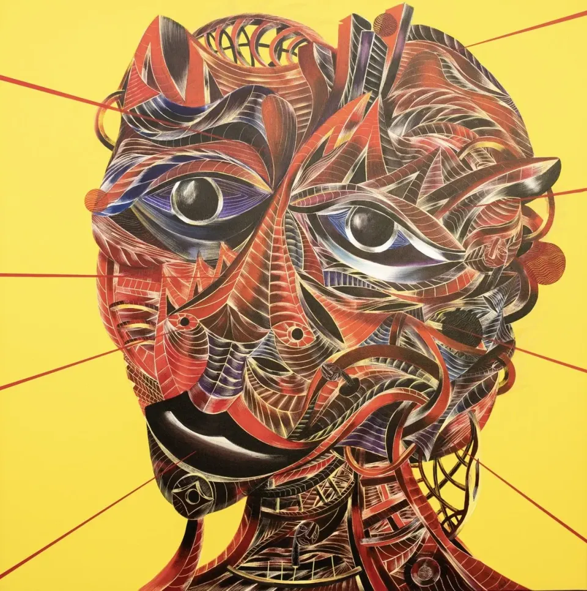
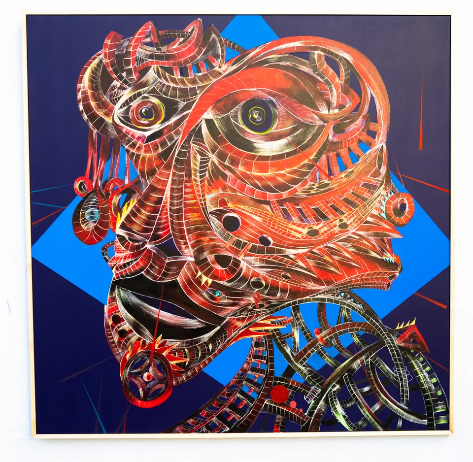
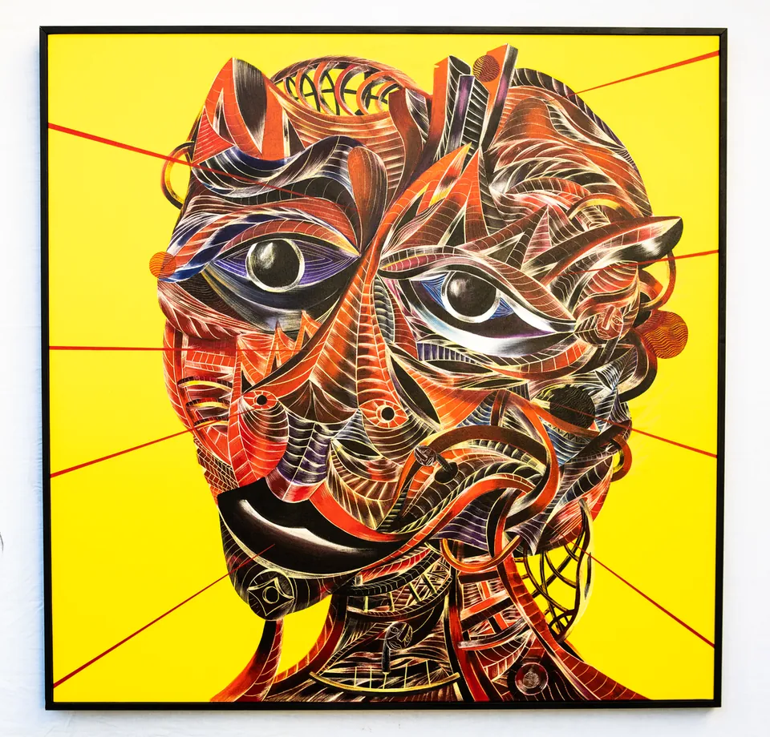
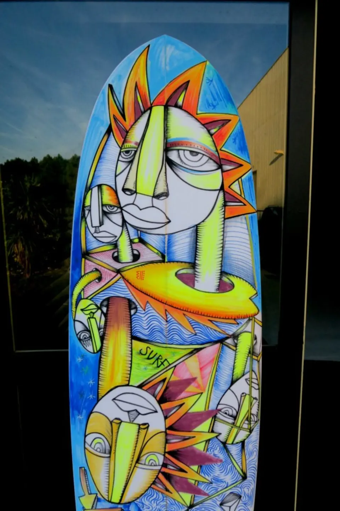
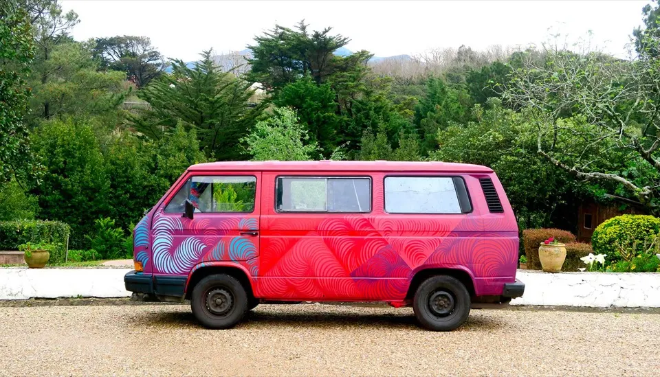
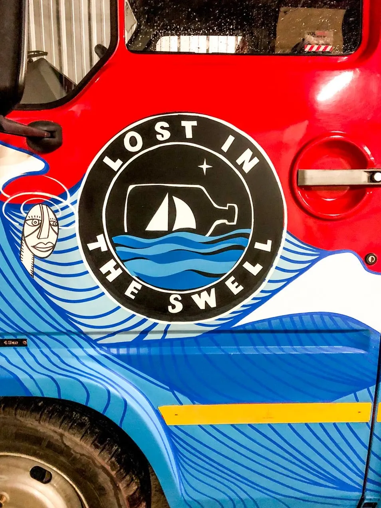
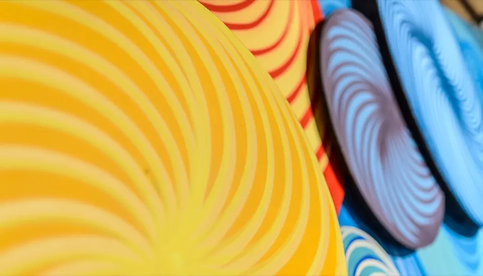

Peintures, planches et objets.
De la toile à la planche de surf, Delwood prolonge dans l'atelier ce que la rue et le mur lui ont appris. Peinture Golden, encres, gravures et stylo à pointe fine : une écriture graphique qui traverse les supports.





Au-delà de la toile et du mur, Delwood customise des objets et des supports atypiques : planches, véhicules, mobilier. Chaque pièce reste unique.

